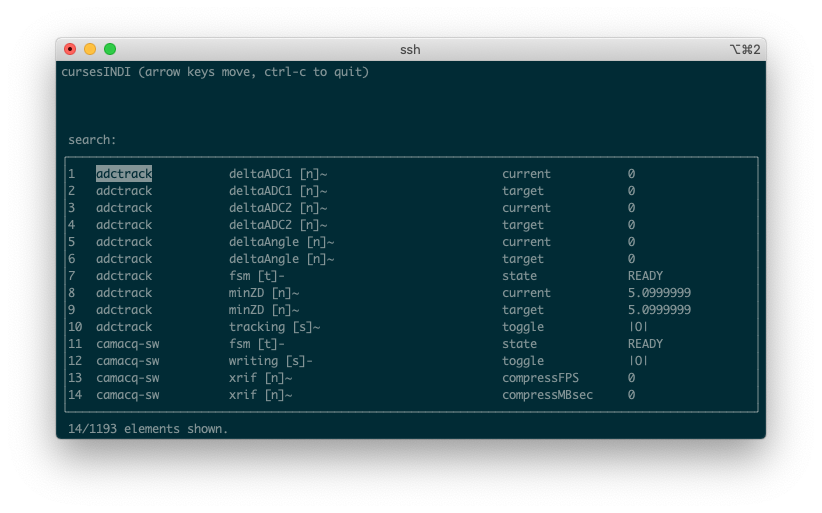

cursesINDI¶
The instrument interface of first and last resort.
The cursesINDI tool is available on all MagAO-X computers (including VMs and the test bed) and enables viewing and manipulation of the instrument settings via low-level properties and the INDI protocol. It can be useful when adding new drivers to the system, or when trying to track down a strange behavior in a higher-level GUI interface.
You do not need to be xsup to run cursesINDI, but you do need localhost:7624 to connect to a local or remote indiserver. This is the case when SSHed in to AOC, RTC, ICC, or the testbed (TCC); otherwise, you can use SSH tunneling.
Overview¶
Start cursesINDI from a terminal with the cursesINDI command.

The terminal will blank and show something like the screenshot above. Note: that you may need to resize your terminal to see all five columns:
index
device name
property name (and meta info, see below)
element name (see conventions below)
value
By default, you’re in “search” mode. Start typing a device name and cursesINDI will scroll the list to bring that device into view. Right-arrow over to the value column, and the search: prompt will change to (e)dit this number. Hit the e key and you’ll be prompted to set devname.propname.element=. Type in your new value, hit enter, and confirm (after checking carefully) the new value with y. (Or, you can hit Esc to get out of setting the value.)
Property meta info¶
The bracketed letter indicates whether a property is a [t]ext, [n]umber, [s]witch, or [l]ight as defined by INDI. The character after the brackets can be ~ (Idle), - (Ok), * (Busy), or ! (Alert). You’ll see Idle properties switch to Busy when you set them, and back to Idle once the state you’ve set has been reached.
Element naming convention¶
In the MagAO-X instrument, the convention is for settable properties to expose their current value and their target value as two elements of the property. This is useful to, e.g., command stages and compare their current location to their commanded one. (Thanks to limitations in INDI, “read-only” can only apply to properties, not elements. Functionally, current is read-only and all edits are to target.)